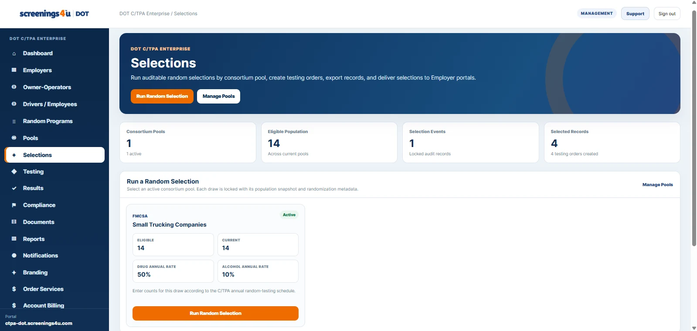

Program Administration
From Covered Worker to Completed Test: Build a Connected DOT Workflow
A practical operating model for keeping worker, program, pool, selection, testing, and record activity connected from start to finish.
Read Featured Article